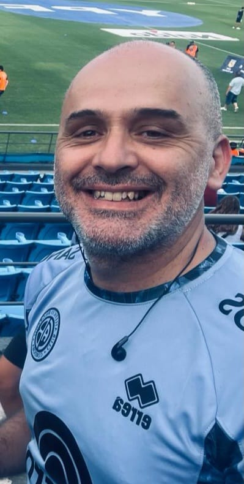

Jose Maria Sanabria | WDD130
Hello! My name is Jose Maria Sanabria and I am from Cordoba, Argentina. I like to play soccer with friends. In the sport, I find a renewal of physical and spiritual strength. I also enjoy it with my children. We are fans of the greatest team, BELGRANO!